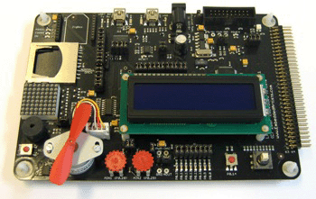
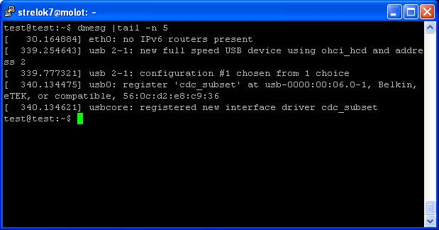
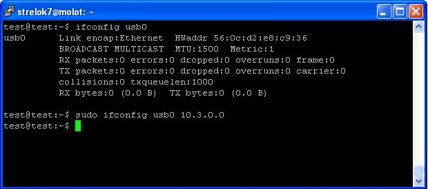
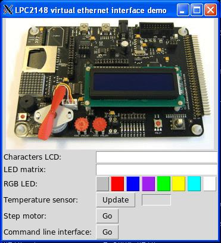

Virtual USB Ethernet adapter for LPC2148
Evgeny Bydilovsky<evgenyby@tau.ac.il>
Alexey Zagalsky<alexeyza@tau.ac.il>
1 Introduction
The final project of "Embedded Systems" course at Tel-Aviv unversity was to create virtual ethernet interface that can be used to control LPC2148 board, which we studied during the course. The idea is to program the board in such way that when connecting it through USB to a normal linux machine, a network device will be detected. This will allow the user to connect to the device through standard telnet connection and use a command line menu to control the board.
2 High level design
The system can be divided to 3 main parts:
2.1 Usb Engine
This part is responsible for initialization and the logic of the USB ethernet device. It's responsibilities are to answer the standard USB requests, identify itself as an ethernet USB device and interact with the host by sending and receiving ethernet frames.
2.2 Network Engine
The responsibility of this part is to build the network stack on top of the base services provided by the USB engine and to allow sending and receiving of data payloads from the host (linux) machine to the application part.
2.3 Application
This is the logic which translates data, sent through the network connection, to LPC2148 control commands. This allows user interaction with the board through command line interface (CLI).
3 Implementation
We first started to implement the "USB Engine" part. We used the demo code from exercise 8 to implement the standard usb requests, which are sent by the host during the USB enumeration process.
Then we needed to make the host machine to identify the device as an ethernet device. Googling revealed us that several communication protocols exist to interact with USB network device. In linux, the CDC protocol allows this communication and in windows exists a similar protocol called RNDIS. Naturally we decided to focus on linux hosts and after some reading we found out that light cdc implementation exists for network devices with minimal set of features called cdc_subset.
After reading the linux sources (drivers/net/usb/cdc_subset.c) we came up with idea to take the identity of an existing device so that the linux cdc_subset kernel driver will be chosen to work with our device. The idea was successful and after putting a vendor and a product id of "Belkin ethernet device" into our usb descriptor, the device was successfully detected as an ethernet device. New network interface was created by the os and we started receiving ethernet frames through the USB bulk endpoint which we defined in the usb descriptor.
Next step was to write a simple code to assemble an ethernet frame from 64 bytes USB frames which we got from the host. We used a ring of 8 buffers to allow queuing up to 8 ethernet frames received from the host. In addition we used one buffer to allow sending of ethernet frame to the host.
Since we needed to implement the network stack (TCP/IP) to get a true network connection, we used uip which is a light TCP/IP stack targeted for the embedded development. We hooked the the UIP implementation with our USB driver which was capable of sending and receiving ethernet frames and as a result we had the ability to open sockets, send/receive data through it and had the ability to respond to ICMP requests and ARP requests.
Here we encountered 2 small problems. Our working environment was ubuntu 9.10 live cd. The default behavior of the network stack on ubuntu is to work with ipv6 which was not completely supported by the uip implementation. So we disabled it and configured the interface to use ipv4. Another problem was the limitation of the uip implementation to handle ip headers of constant size (without the variable options part). So we disabled the network-manager daemon of ubuntu which was sending automatically "problematic" ip packets. Now the implementation worked perfectly and we moved to the implementation of the application.
We used the telnetd application distributed with the uip to implement a command line interface which controls the board. The user connects to the USB device by first configuring the network interface with ifconfig and then running telnet to the specific ip. Then the user gets a prompt and can run commands which invoke different hardware drivers, some of which were implemented during the exercises in the course. The commands are:
- lcd <msg> - print the message to the lcd screen
- matrix <msg> - display the message char by char on the leds matrix
- rgb <color> - change the rgb led to the specified color
- temperature - print the temperature returned by the board sensor
- motor - rotate the step motor for several seconds
- help, ? - display help menu
- exit - disconnect
4 Step by step demonstration
We tested our gadget on pc running ubuntu 9.10.
-
After connecting usb cable between the board and the test pc, the usb ethernet adapted
would be detected by the linux kernel and the cdc_subset kernel module would be loaded to interact
with the device

-
Now we can configure the new interface and give it ip address

- Since we compiled the uip library without ipv6 support we will disable it in the linux machine. We will also stop the network manager which sends ip packets with with 'options' part that is not supported by the uip stack. This actions are specific for ubuntu 9.10 and won't be needed for older releases.
-
now we can ping our virtual ethernet interface and connect to it

-
We can use the various commands to interact with the LPC2148 periphery:
- print message to LCD screen
- display message on the led matrix
- measure the temperature
- rotate the step motor
- set the color of the RGB led
-
We also provide nice GUI program which configures the interface automatically and provides
all options which can be accessed through the command line.
The gui program is written in python and requires python-tk package to be installed
(apt-get install python-tk).

5 Source files
- src/drivers - code to interact with LPC2148 board periphery (usb, i2c, uart, etc…)
- src/lpc2000 - LCP2148 board constants and registers mappings
- Lpc2148Demo.py - GUI application to interact with the virtual usb ethernet device
- net_timers.c - implementation of timers needed for the uip network stack
- printf.c - printf implementation used for debug output to the serial console through UART interface
- uip-1.0 - uip implementation taken from uip site
- usb-eth.c - main program which initializes the board and starts the virtual ethernet device logic
- usb-eth_dev.c - virutal ethernet device implementation (driver to send/receive ethernet frames)
- uip-1.0/apps/telnetd/shell.c - implements the CLI which can be accessed by connecting with telnet to the device
- uip-1.0/apps/telnetd/lpc2148_cmds.c - includes all CLI commands implemented
- uip-1.0/apps/telnetd/lcd_cmd.c - lcd command implementation
- uip-1.0/apps/telnetd/matrix_cmd.c - matrix command implementation
- uip-1.0/apps/telnetd/motor_cmd.c - motor command implementation
- uip-1.0/apps/telnetd/rgb_cmd.c - rgb command implementation
- uip-1.0/apps/telnetd/temperature_cmd.c - temperature command implementation
6 License
We release our project licensed under the BSD-style license that follows. It basically means "use in any way you wish, just give proper credits by including the copyright notice in the source code and mention it in any documentation or manuals provided with your product".
Copyright (c) 2009-2010, Evgeny Budilovsky, Alexey Zagalsky and the School of Computer Science in Tel Aviv University. All rights reserved. Redistribution and use in source and binary forms, with or without modification, are permitted provided that the following conditions are met: 1. Redistributions of source code must retain the above copyright notice, this list of conditions and the following disclaimer. 2. Redistributions in binary form must reproduce the above copyright notice, this list of conditions and the following disclaimer in the documentation and/or other materials provided with the distribution. 3. The name of the author may not be used to endorse or promote products derived from this software without specific prior written permission. THIS SOFTWARE IS PROVIDED BY THE AUTHOR `AS IS' AND ANY EXPRESS OR IMPLIED WARRANTIES, INCLUDING, BUT NOT LIMITED TO, THE IMPLIED WARRANTIES OF MERCHANTABILITY AND FITNESS FOR A PARTICULAR PURPOSE ARE DISCLAIMED. IN NO EVENT SHALL THE AUTHOR BE LIABLE FOR ANY DIRECT, INDIRECT, INCIDENTAL, SPECIAL, EXEMPLARY, OR CONSEQUENTIAL DAMAGES (INCLUDING, BUT NOT LIMITED TO, PROCUREMENT OF SUBSTITUTE GOODS OR SERVICES; LOSS OF USE, DATA, OR PROFITS; OR BUSINESS INTERRUPTION) HOWEVER CAUSED AND ON ANY THEORY OF LIABILITY, WHETHER IN CONTRACT, STRICT LIABILITY, OR TORT (INCLUDING NEGLIGENCE OR OTHERWISE) ARISING IN ANY WAY OUT OF THE USE OF THIS SOFTWARE, EVEN IF ADVISED OF THE POSSIBILITY OF SUCH DAMAGE.
Date: 2010-01-11 Mon